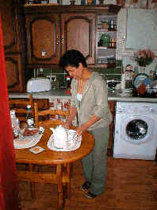
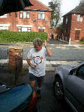
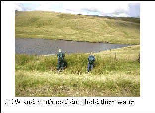
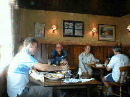
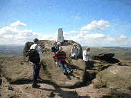
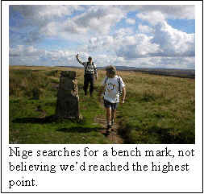

Rochdale walk 21st Aug 04
Hikers: Me, Mo, Keith Ph, Nige, JayCW, John ‘Bird man’ Skinner and 2 lads from Peter Bretts.
Let down at last minute – Tim, Pedro and Bill T fixing a leek in garage roof.
The walk was a repeat of a successful walk carried out a couple of years ago, which started from Mo’s house, bacon butties prepared by the one and only wonderful Elsie, and a cuppa prepared by Mo, and passed from Rochdale territory into Oldham territory and back again.
The walk began around 9 o’clock, a little later than expected, cus we had to wait for the youngsters to arrive. Working in the private industry they obviously weren’t used to getting up so early; and Nige to take the team photo.
Knowing the route from the previous jaunt, we set off without even a glance at the maps. John ‘Bird man’ Skinner mentioned that he’d now got plenty of time to watch and appreciate the Olympics, especially the ladies beach volleyball competitions, now that he was retired. We were very impressed.
JayCW and Keith were on for it, having drank so much tea, and couldn’t hold their water any longer.
JayCW was glad to be out of the office at last, where he was continually being pestered with irate phone calls telling him to ‘get his arse out of the office and check this gully out’. His arse was definitely out today in the Rochdale wind.
Within a couple of miles we veered off line, on purpose of course, so that we could take in a different vista than the last walk. The teenagers thought this was an error and we were lost! How could this be, we’re experienced walkers.
The sun was shining and a warm dry day had been forecast. Yup had set off very light (no way!), risking the wrath of English weather. It was pointless carrying a fleece and raincoat around all day with such a wonderful forecast predicted. As we approached the pub the heavens opened.
Nige was assured that the walk wasn’t all up-hill. We’d done it before of course, and it was all down-hill from the first pub!! Finally we arrived and had a choice of either Black sheep or the landlord…mmmmhhhh (bitter incidentally). As time was getting on we voted to stay put for lunch as, we’d probably be too late for the White House pub. How right that decision proved to be. My ration was reduced to only a pint and a half, as I was driving. Very restrained to Mo’s astonishment.
The beef sarnies with chips however, weren’t up to our high standards. The side salad was pretty and the 5 chip wedges looked appetising and one side of the buttie was missing. Had it blown off? The lads trouts were fresh; but they had taken the chef about 2 hours to catch them in the adjacent reservoir.
As the last fin was chewed we stepped out onto the moors. John ‘Bird man’ Skinner mentioned that he’d now got plenty of time to watch and appreciate the Olympics, especially the ladies beach volleyball competitions, now that he was retired. We were very pleased. Up-hill again and again until eventually we dropped down to the motorway and bid farewell to the lads who were on a promise with the gas man. That was their excuse anyway. I reckon they couldn’t keep up the fast pace we had set. Surely they wouldn’t get lost on their way back after us teaching them invaluable orienteering lessons on route.
Finally passing the summit we descended to a famous rock and a roman road, which we followed down to the White House. As expected, it was shut. We weren’t disappointed though as the site of a bobbin red breast gliding around us kept our spirits up, especially JayCW’s when she appeared to wave to him. I think it must have been the Rochdale wind she was wafting out of her face.
Luckily, especially for me, another public house, with conveniences, was reachable just down the road. What a welcome sight. Open all day, and footy on the telly. The Chief Exec from Rochdale Borough council was noted to leave as we tripped onto the rear patio in the sunshine. Stoke beat Gillingham 2-0, and Wolves inevitably lost.
Back at the start, Mo was out to prove to his lads that he’d still got plenty of energy left to race them round the garden. Jonathan won of course, and Mo resigned himself to making us another welcome cup of tea.
As we sat in the jungle, garden admiring the trampoline nestling in the undergrowth, Elsie admitted to using it on occasions and trying a somersault or two. (Mo denied responsibility for the upkeep of the garden, blaming Elsie). The recent Olympic competitions sprung to mind. John ‘Bird man’ Skinner mentioned that he’d now got plenty of time to watch and appreciate the Olympics, especially the ladies beach volleyball, now that he was retired. We were impressed and our thoughts were with him. It was noted that England had just won gold in the white water rafting competition by 2 men from Boscastle in a white transit van.
Nige went home at this point and left us to venture out for a local Indian with the full Kachfi family. A few extra chillies and my balti was perfect. Poor young Jonathan received little sympathy from Bruno, the waiter, as his lips reacted to the extra hot chillie I’d slipped into his kurma when he wasn’t looking.
An excellent curry, much better than the last one we had when we previously stopped in the Sun Hotel aaaaaahhhhhhh. Promised I wouldn’t bring that place up again.
Yupmeister